Home / MLF / Week 2 / Real questions
MLF week 2 - real exam questions
38 questions pulled from past papers whose wording matches this week's topics, newest first, duplicates removed. Pick your answers, then press Check answers. Figures and answer keys are the originals.
Elapsed 00:00
Consider the function
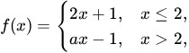
where is a constant. Which of the following is/are true? is continuous at
is continuous at 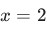
for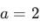
.- is continuous at for
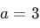
. - is differentiable at for .
- is not differentiable at for .
Consider the function  Gradient descent is used to minimize
Gradient descent is used to minimize  with learning rate
with learning rate  . Which of the following statements is/are correct?
. Which of the following statements is/are correct?
Gradient descent is used to minimize with learning rate . Which of the following statements is/are correct?- Gradient descent converges for every
 .
. - If , the global minimum is reached in exactly one iteration for every non-zero initial point
 .
.
- If , the global minimum is reached in exactly one iteration for every initial point .

- If , the iterates alternate between and
 for any
for any  .
.
What is the best linear approximation of
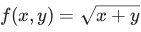
around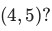
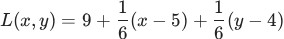
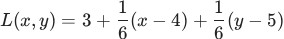
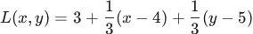
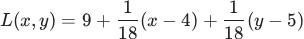
A company manufactures a special rectangular metal sheet. The production cost (in hundreds of rupees) depends on its length  meters and width
meters and width  meters according to
meters according to
meters and width meters according to 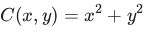
. At a particular stage, the dimensions of the sheet are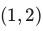
. The company plans to change the dimensions in the direction represented by the vector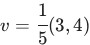
and wants to determine how rapidly the production cost changes in that specific direction. Find the directional derivative of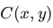
at the point in the direction of .

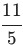
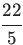
Which of the following is/are true?
- A set
 is convex if and only if convex-hull
is convex if and only if convex-hull 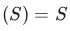
. - If is a non-empty convex set in
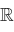
with a finite number of elements, then has exactly one element. - If
 is a convex function, then
is a convex function, then  is differentiable.
is differentiable. - If
 is a function, then the epigraph of is a subset of
is a function, then the epigraph of is a subset of  .
.
Find the best linear approximation of the function  around the point
around the point  .
.
around the point .


Which of the following options is/are correct 
- Set of all global minima of a convex function forms a convex set.
- Gradient descent algorithm is useful in constrained optimization problem.
- Union of two convex sets will result in a convex set always.
- A function cannot be a convex function if its domain is not a convex set.
Which of the following represents the Taylor series expansion up to the third degree term of
 ?
?
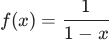
around ?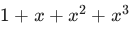
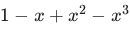
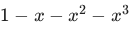
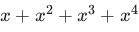
Consider a function whose graph is shown below.  and
and  correspond to local minima of .
correspond to local minima of .
 We run two separate instances of gradient descent with the same learning
We run two separate instances of gradient descent with the same learning  but different initial points. (1) Starting from the point
but different initial points. (1) Starting from the point  (2) Starting from the point
(2) Starting from the point  Assume that
Assume that  and are very small positive quantities. Which of the following is/are true if we run gradient descent for a large number of iterations?
and are very small positive quantities. Which of the following is/are true if we run gradient descent for a large number of iterations?
whose graph is shown below. and correspond to local minima of .
We run two separate instances of gradient descent with the same learning but different initial points. (1) Starting from the point (2) Starting from the point Assume that and are very small positive quantities. Which of the following is/are true if we run gradient descent for a large number of iterations?- Instance (1) will converge to the point
- Instance (2) will converge to the point
- Both instances (1) and (2) will converge to
- Both instances (1) and (2) will converge to
- Instance (1) will not converge to , but will diverge to negative infinity
- Instance (2) will not converge to , but will diverge to infinity
A function  is minimized using the gradient descent algorithm. Let
is minimized using the gradient descent algorithm. Let  denote the value of
denote the value of  at which
at which  is minimized.Starting from the initial point
is minimized.Starting from the initial point  , one iteration of gradient descent is performed with a learning rate of
, one iteration of gradient descent is performed with a learning rate of  . If
. If  denotes the point obtained after this iteration, find the value of
denotes the point obtained after this iteration, find the value of  . Enter the answer correct to one decimal place.
. Enter the answer correct to one decimal place.
is minimized using the gradient descent algorithm. Let denote the value of at which is minimized.Starting from the initial point , one iteration of gradient descent is performed with a learning rate of . If denotes the point obtained after this iteration, find the value of . Enter the answer correct to one decimal place.Consider the function :
 Which of the following is true?
Which of the following is true?
:
Which of the following is true?- is continuous at
 , but not differentiable at .
, but not differentiable at . - is both continuous and differentiable at .
- is neither continuous nor differentiable at .
- is differentiable at , but not continuous at .
Consider the function  given by
given by
 . If the best linear approximation to at is given as
. If the best linear approximation to at is given as  , find
, find  . Your answer should be an integer.
. Your answer should be an integer.
given by
. If the best linear approximation to at is given as , find . Your answer should be an integer.Find the directional derivative of the function given by  at the point
at the point  in the direction of the vector
in the direction of the vector
 . Your answer should be an integer.
. Your answer should be an integer.
given by at the point in the direction of the vector
. Your answer should be an integer.Let  be a continuous random variable with the probability density function:
be a continuous random variable with the probability density function:
 What is the value of
What is the value of 
be a continuous random variable with the probability density function:
What is the value of Comprehension passage for this question
A company aims to minimize its production cost, represented by the following quadratic function:  The company applies the gradient descent algorithm to minimize this function, starting with an initial guess of
The company applies the gradient descent algorithm to minimize this function, starting with an initial guess of  and using a step size (learning rate) of
and using a step size (learning rate) of
 , where
, where  Based on the above data, answer the given subquestions.
Based on the above data, answer the given subquestions.Find the updated point  after the first iteration of the gradient descent algorithm.
after the first iteration of the gradient descent algorithm.
after the first iteration of the gradient descent algorithm.


Let
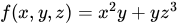
. Find the directional derivative of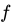
at the point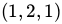
in the direction of unit vector along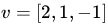
.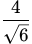
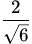
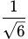
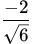
Determine which of the following limits yields a finite value.


Which of the following statements about choosing the learning rate in gradient descent is incorrect?
- A small learning rate can lead to slow convergence.
- A large learning rate can cause the loss function to fluctuate around theminimum.
- A large learning rate can cause divergence.
- A small learning rate always causes the training to progress very quickly.
Consider a function f(x,y) = (x − 1)2 + (y − 2)2 . Using a gradient descent algorithm, with an initial guess of (0, 0) and learning rate of 0.1, what will be the absolute difference between the value of the function after first and second iteration? Enter the answer correct to three decimal places.
The value of a function at point 25 is 5. The values of the function’s first and second order derivatives at this point are 0.1 and -0.002 respectively. What will be the function’s approximate value at the point 25.1? (Enter the answer correct up to three decimal places).
Which of the following statements is true for a function f(x, y) that is differentiable at a point (a, b)?
- The directional derivative exists in every direction.
- The directional derivative is the same in every direction.
- The directional derivative can only be calculated along the axes.
- The directional derivative does not exist.
Comprehension passage for this question
Based on the above data, answer the given subquestions.

Find the number of discontinuous points.
Comprehension passage for this question
Based on the above data, answer the given subquestions.
Find the number of points where the function is not differentiable.
The value of a function at point 5 is 10. The values of the function’s first and second order derivatives at this point are 5 and 2 respectively. What will be the function’s approximate value at the point 5.1? (Enter the answer correct up to two decimal places).
Which of the following functions is/are continuous?


Consider a function f(x, y) = x2 + y2 − 4x − 2y + 5. Using gradient descent algorithm, with an initial guess of (3, 2) and learning rate of 0.1, what will be the value of (x, y) after one iteration?
- x = 3.2, y = 2.2
- x = 3, y = 2
- x = 1.8,y = 0.8
- x = 2.8, y = 1.8

- f is discontinuous at x = 0.
- f is differentiable.
- f is not differentiable at x = 0.
- f'(0) = 0
Which of the following statements accurately describes the key difference between classification and regression models?
- In classification, the output variable is continuous and real-valued, while inregression, it is categorical.
- Regression models are used for predicting probabilities, whereas classificationmodels focus on predicting absolute values.
- Classification models aim to find decision boundaries to separate data intoclasses, while regression models seek to predict a numeric value.
- In regression, the commonly used loss function is mean squared error, whilein classification, 0 -1 loss is typically employed.
Which of the following statements regarding gradient descent is/are correct?
- If the step size is chosen as 1, we may “not always” arrive as close to theoptimal solution even after many number of iterations.
- Solution obtained for optimization problem is the local minimum of itsobjective function.
- Solution obtained for optimization problem is the global minimum of itsobjective function.
- Gradient descent converges to the global optimum in the case of convexfunctions.
- Gradient descent does not converge to the global optimum in the case ofconvex functions.
Which of the following statements regarding classification and regression models are correct ?
- The task of the regression algorithm is to map the input value (x) with thecontinuous output variable (y) but the task of the classification algorithm is to map the inputvalue(x) with the discrete output variable(y).
- In Classification, we try to find the decision boundary, which can divide thedataset into different classes but In Regression, we try to find the best fit line, which can predictthe output more accurately.
- The Classification Algorithm can be further divided into Linear and Non-linearclassifier and the regression algorithms can be divided into Binary regression and Multi-classregression.
- The task of the regression algorithm is to map the input value (x) with thediscrete output variable (y) but the task of the classification algorithm is to map the input value(x)with the continuous output variable(y).
A student wants to purchase a snack from a bakery to meet certain dietary requirements by chossing the best combination of brownies and cheesecake. The student is following some new diet trend which requires her to eat maximum of 6 brownies and maximum of 10 cakes. Also total number of brownies and cakes together the student eats should be greater than 12. The cost of 1 piece of brownie(x1) and 1 piece of cake(x2) is 50 units and 80 units respectively. Her goal is to satisfy these requirements at minimal cost.
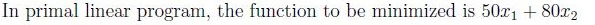
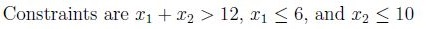
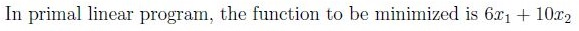
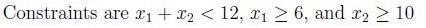

- It is Convex function.
- Its Hessian matrix is indefinite.
- (0, 0) is a local minima of this function.
- (0, 0) is a local maxima of this function.
Let f be a function of three variables. The eigenvalues of Hessian of f are 2, 4, 1. Then what does f
give ?
- Minima.
- Maxima.
- Saddle.
- It can be either maxima or minima.
Which of the following is not true about the function f(x) = x2 + y2 + 2xy ?
- It is Convex function.
- Its Hessian matrix is indefinite.
- (0, 0) is a local minima of this function.
- (0, 0) is a local maxima of this function.

- Minima
- Maxima
- Saddle
- It can be either maxima or minima
Comprehension passage for this question
Based on the above data, answer the given subquestions.

Compute the equation of the function’s linear approximation at point (2,3). If the equation of the linear approximation is L = ax + by + c, then provide the value of a. NOTE: Enter your answer to the nearest integer.
Comprehension passage for this question
Based on the above data, answer the given subquestions.
Compute the equation of the function’s linear approximation at point (2,3). If the equation of the linear approximation is L = ax + by + c, then provide the value of b. NOTE: Enter your answer upto two decimal.
Comprehension passage for this question
Based on the above data, answer the given subquestions.
Compute the equation of the function’s linear approximation at point (2,3). If the equation of the linear approximation is L = ax + by + c, then provide the value of c. NOTE: Enter your answer upto two decimal.